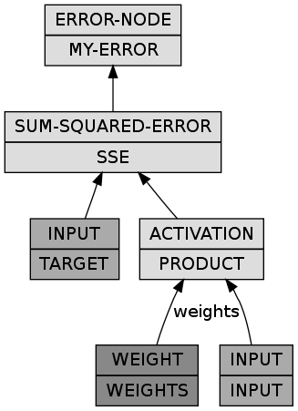

Introduction to MGL (part 2)
Tags: ai, lisp, Date: 2009-12-17
UPDATE: This post out of date with regards to current MGL. Please refer to the documentation instead.
After Introduction to MGL (part 1), today we are going to walk through a small example and touch on the main concepts related to learning within this library.
At the top of the food chain is the generic function TRAIN:
(defgeneric train (sampler trainer learner)
(:documentation "Train LEARNER with TRAINER on the examples from
SAMPLER. Before that TRAINER is initialized for LEARNER with
INITIALIZE-TRAINER. Training continues until SAMPLER is finished."))A learner is anything that can be taught, which currently means it's
either a
backpropagation network (BPN)
or some kind of boltzmann machine (BM). The method with which a
learner is trained is decoupled from the learner itself and lives in
the trainer object. This makes it cleaner to support multiple
learning methods for the same learner: for instance, either gradient
descent (BP-TRAINER) or conjugate gradients (CG-BP-TRAINER) can
be used to train a BPN, and either contrastive
divergence (RBM-CD-TRAINER) or persistent contrastive
divergence (BM-PCD-TRAINER) can be used to train a restricted
boltzmann machine (RBM).
The function TRAIN takes training examples from
SAMPLER (observing the batch size of the trainer, if applicable)
and calls TRAIN-BATCH with the list of examples, the trainer and
the learner. This may be as simple as:
(defmethod train (sampler (trainer bp-trainer) (bpn bpn))
(while (not (finishedp sampler))
(train-batch (sample-batch sampler (n-inputs-until-update trainer))
trainer bpn)))Ultimately, TRAIN-BATCH arranges for the training examples to be
given as input to the learner ("clamped" on the input nodes of some
network) by SET-INPUT; exactly how this should be done must be
customized. Then, in the case of BP-TRAINER, the gradients are
calculated and added to the gradient accumulators that live in the
trainer. When the whole batch is processed the weights of the
network are updated according to the gradients.
Let's put together a toy example:
(use-package :mgl-util)
(use-package :mgl-train)
(use-package :mgl-gd)
(use-package :mgl-bp)
(defclass linear-bpn (bpn) ())
(defparameter *matrix*
(matlisp:make-real-matrix '((1d0 2d0) (3d0 4d0) (5d0 6d0))))
(defparameter *bpn*
(let ((n-inputs 3)
(n-outputs 2))
(build-bpn (:class 'linear-bpn)
(input (input-lump :size n-inputs))
(weights (weight-lump :size (* n-inputs n-outputs)))
(product (activation-lump :weights weights :x input))
(target (input-lump :size n-outputs))
(sse (->sum-squared-error :x target :y product))
(my-error (error-node :x sse)))))
(defmethod set-input (samples (bpn linear-bpn))
(let* ((input-nodes (nodes (find-lump 'input bpn)))
(target-nodes (nodes (find-lump 'target bpn)))
(i-v (storage input-nodes)))
(assert (= 1 (length samples)))
(loop for i below (length i-v) do
(setf (aref i-v i) (elt (first samples) i)))
;; TARGET-NODES = INPUT-NODES * *MATRIX*
(matlisp:gemm! 1d0 (reshape2 input-nodes 1 3) *matrix*
0d0 (reshape2 target-nodes 1 2))))
(defun sample-input ()
(loop repeat 3 collect (random 1d0)))
(train (make-instance 'counting-function-sampler
:sampler #'sample-input
:max-n-samples 10000)
(make-instance 'bp-trainer
:segmenter
(repeatedly
(make-instance 'batch-gd-trainer
:learning-rate (flt 0.01)
:momentum (flt 0.9)
:batch-size 10)))
*bpn*)We subclassed BPN as LINEAR-BPN and hanged a SET-INPUT method
on it. The SAMPLES argument will be a sequence of samples returned
by the sampler passed to TRAIN, that is, what SAMPLE-INPUT
returns.
The network multiplies INPUT taken as a 1x3 matrix by WEIGHTS
(initialized randomly) and the training aims to minimize the squared
error as calculated by the lump named SSE. Note that SET-INPUT
clamps both the real input and the target.
We instantiate BP-TRAINER that inherits from
SEGMENTED-GD-TRAINER. Now, SEGMENTED-GD-TRAINER itself does
precious little: it only delegates training to child trainers where
each child is supposed to be a GD-TRAINER (with all the usual
knobs such as learning rate, momentum, weight decay, batch size,
etc). The mapping from segments
(bpn lumps here) of the learner to gd trainers is provided by the
function in the :SEGMENTER argument. By using REPEATEDLY, for now,
we simply create a distinct child trainer for each weight lump as it
makes a function that on each call evaluates the form in its body (as
opposed to CONSTANTLY).
That's it without any bells and whistles. If all goes well WEIGHTS
should be trained to be equal to *MATRIX*.
Inspect (nodes (find-lump 'weights *bpn*)) to verify.
Impatience satisfied, examine the BUILD-BPN form in detail. The
:CLASS argument is obvious, and the rest of the forms are a
sequence of bindings like in a LET*. The extra touches are that
the name of the variable to which a lump is bound is going to be
supplied as the :NAME of the lump and an extra MAKE-INSTANCE is
added so
(input (input-lump :size n-inputs))is something like
(make-instance 'input-lump :name 'input :size n-inputs)One can replicate this with MAKE-INSTANCE and ADD-LUMP, but it's
more work. For ease of comprehension the network can be visualized
by loading the mgl-visuals system and:
(let ((dgraph (cl-dot:generate-graph-from-roots *bpn* (lumps *bpn*))))
(cl-dot:dot-graph dgraph "linear-bpn.png" :format :png))
That's it for today, thank you for your kind attention.